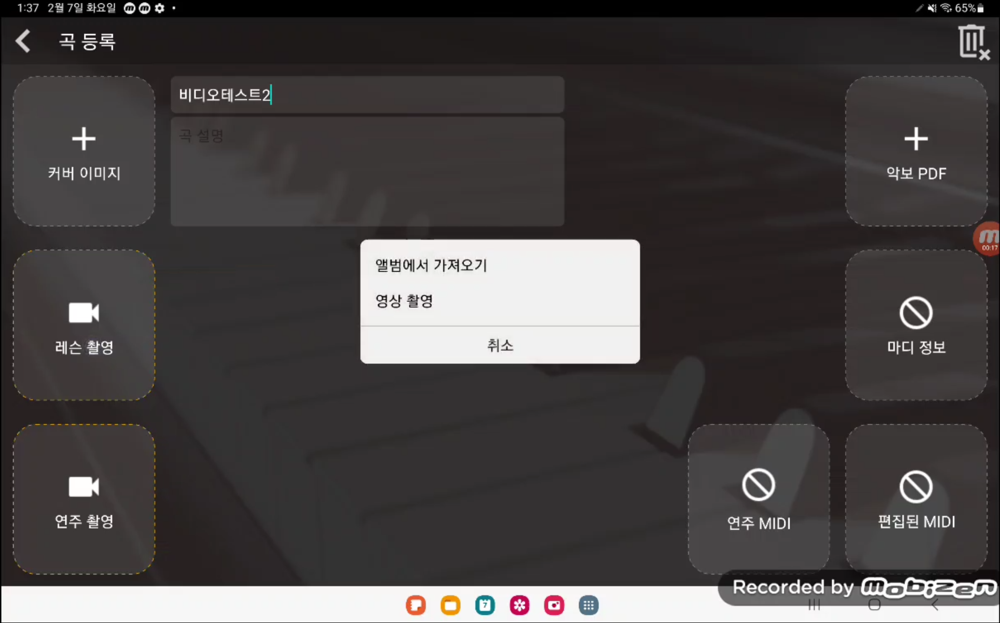

MIDI기반의 피아노연주 정밀분석 알고리즘과 GPU기반 실시간인코딩을 통한 지능형개인맞춤형 피아노 강습 솔루션
과제요약
과제 기간 : 2019.11.25 ~ 2021.11.24
Github : https://github.com/zlstl1/soundLeader
주요기술 : Python, Pytorch, Spring, Docker, Nginx, RestAPI
주요기능 : 연주자의 연주 정보를 딥러닝 기반의 모델을 통해 코칭 해주는 피아노 학습용 앱 개발
수행업무
학습자용/강사용 앱으로 구분하여 개발하며 연주 영상을 서버로 전송하고 전송된 영상은 GPU기반 실시간 인코딩을 통해 여러 해상도 및 압축하여 저장 저장된 영상의 소리 정보(.wav)를 MFCC를 통해 파형 이미지 데이터로 변환하여 이미지 기반의 연주 오류 분류 모델 개발 강사 및 학습자가 업로드한 영상은 서버에서 저장하고 실시간 스트리밍이 가능하도록 구현 실제 서비스를 위하여 서버의 기능들은 도커 형태로 개발 담당업무 : 모델 서버 구축(영상 인코딩, 실시간 스트리밍, 코칭 모델 구동)
ScreenShot

